Green Energy Analytics - From Generation Data to Forecasts and Anomaly Alerts
An energy data analysis project built around the chain that every green-energy plant shares: wind turbines and solar panels generate power, batteries store it, and consumers draw it. The sensor and meter data from that chain was collected on an AWS data server, extracted into MongoDB, and refreshed by Apache Airflow. On top of it sit three models: a Random Forest and a LightGBM model that forecast electricity demand up to 30 days ahead, and a multivariate LSTM autoencoder that flags anomalous inverter behaviour. The anomaly model is served through a Flask API.
Main Process
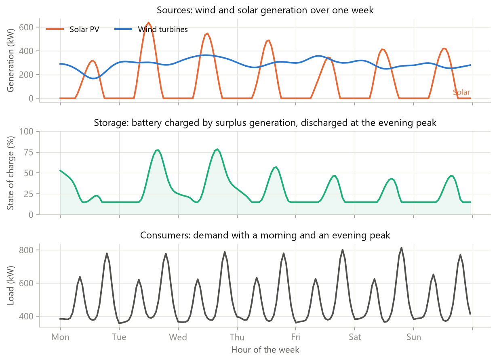
1. Introduction
A green-energy plant is a chain. Wind turbines and solar panels generate power that depends on the weather hour by hour; batteries absorb the surplus and give it back when generation drops; consumers draw a load with its own daily and weekly rhythm. Two questions matter to the operator: how much demand to expect over the coming days, and whether any part of the plant is behaving abnormally right now.
The picture below is the whole system. Sensors along the chain feed a data platform, the platform feeds three models, and the models return forecasts and anomaly alerts to the operator.
flowchart LR
W[Wind turbines]:::input --> INV[Inverters]:::process
S[Solar PV]:::input --> INV
INV --> B[(Storage
batteries)]:::store
B --> G[Grid]:::process
G --> C[Consumers]:::output
INV -. sensor logs .-> D[(Data platform
AWS · MongoDB · Airflow)]:::store
C -. meter data .-> D
D --> M1[Demand forecasting
Random Forest · LightGBM]:::agent
D --> M2[Anomaly detection
LSTM autoencoder]:::agent
M1 --> O1[Forecast
1 to 30 days ahead]:::output
M2 --> O2[Anomaly alerts
global and local]:::output
2. Data platform
The raw data was large: hourly inverter logs and weather records for every inverter, and years of daily demand. It lived on an AWS data server. An extraction job pulled it into MongoDB, where each inverter hour is one document, and Apache Airflow ran the daily DAG: extract the new hours, clean and merge them with the weather, write the features, score the models, and publish the results. Airflow retried failed tasks and kept the run history, so a missing day of data showed up as a red task rather than as a silent gap.
flowchart LR
A[(AWS data server
inverter logs · meters · weather)]:::store --> E[Extract
new hours]:::process
E --> M[(MongoDB
one document per inverter hour)]:::store
M --> T[Clean and merge
with weather]:::process
T --> F[Feature tables
lags · rolling means]:::process
F --> S1[Score forecast
models]:::agent
F --> S2[Score anomaly
model]:::agent
S1 --> P[Publish
forecasts and alerts]:::output
S2 --> P
AF[Apache Airflow
daily DAG, retries, history]:::tool -.-> E
AF -.-> T
AF -.-> S1
AF -.-> S2
The extraction kept the raw records as they came and added only the keys the later steps query on: the inverter number and the hour.
# extract.py: pull the hours that are not yet in MongoDB.
from pymongo import MongoClient, UpdateOne
db = MongoClient(MONGO_URI)["energy"]
def load_hours(rows):
ops = [UpdateOne({"invno": r["invno"], "datetimeAt": r["datetimeAt"]}, {"$set": r}, upsert=True) for r in rows]
db.inverter_hours.bulk_write(ops, ordered=False) # idempotent: a re-run does not duplicate
# dags/energy_daily.py: the Airflow DAG that runs the pipeline every morning.
from airflow import DAG
from airflow.operators.python import PythonOperator
from datetime import datetime, timedelta
with DAG("energy_daily", start_date=datetime(2021, 12, 1), schedule="0 5 * * *",
default_args={"retries": 2, "retry_delay": timedelta(minutes=10)}, catchup=False) as dag:
extract = PythonOperator(task_id="extract_new_hours", python_callable=extract_new_hours)
merge = PythonOperator(task_id="merge_weather", python_callable=merge_weather)
features = PythonOperator(task_id="build_features", python_callable=build_features)
forecast = PythonOperator(task_id="score_forecast", python_callable=score_forecast)
anomaly = PythonOperator(task_id="score_anomaly", python_callable=score_anomaly)
publish = PythonOperator(task_id="publish", python_callable=publish)
extract >> merge >> features >> [forecast, anomaly] >> publish
3. Input data
Two datasets feed the models. For forecasting, the daily electricity demand of Spain from 2014 to 2018, in MWh. For anomaly detection, hourly solar inverter logs merged with weather records.
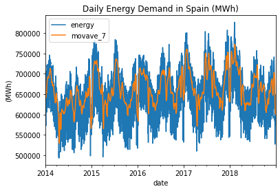
Inverter logs (invno, dckw, ackw, dayTotal) and weather records (wind_spd, temp, pres)
are merged on their hourly timestamp into one table, missing values are filled with zero, and numeric columns are downcast, which cut the memory footprint by 58 %.
inv = pd.read_csv("./data/inverterLog.csv").drop(columns=["mcno"])
weather = pd.read_csv("./data/weather_data.csv")
df = pd.merge(inv, weather, how="outer", on="datetimeAt")
df["datetimeAt"] = pd.to_datetime(df["datetimeAt"], format="%Y-%m-%d %H:%M:%S")
df.fillna(0, inplace=True)
df.to_csv("./combined.csv", index=False)
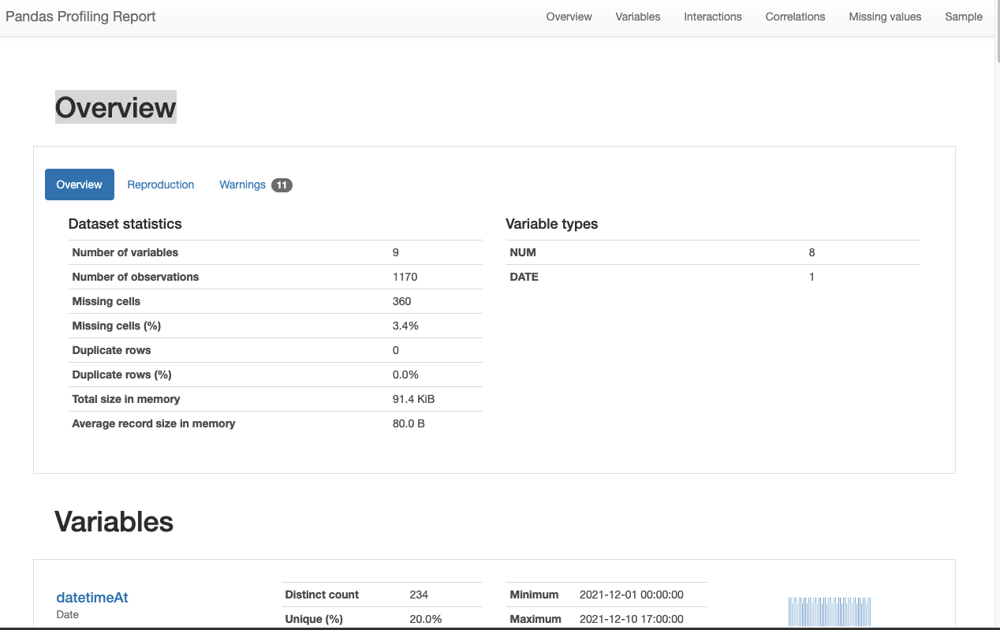
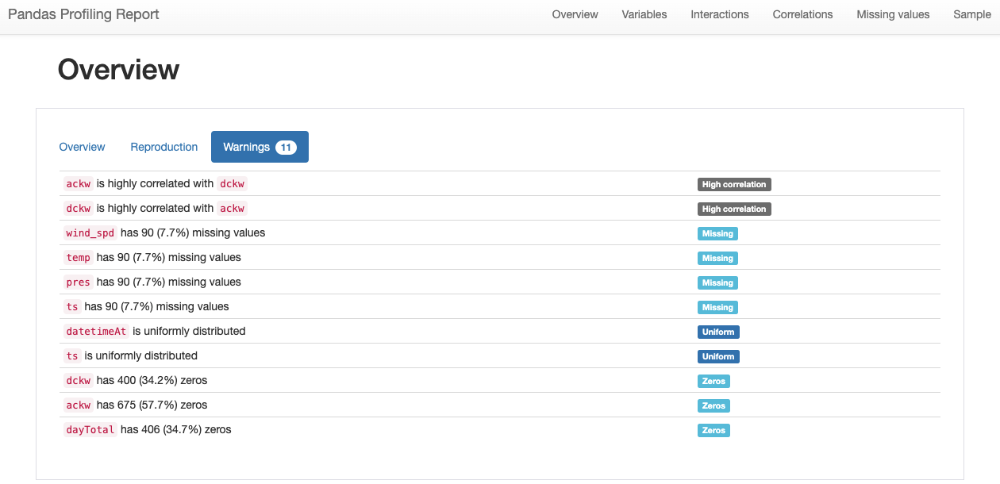
What the data forced
- Daily demand carries three overlapping structures at once: weekly and quarterly seasonality, a slow upward trend, and volatility that changes with the season.
- Demand depends strongly on weather, so a model must be judged on a held-out period rather than on how well it fits the past.
- Public green-energy data is scarce and depends heavily on weather, so inverter logs and weather records had to be merged into one hourly dataset first.
- Several inverter metrics and weather variables move together; an anomaly in one of them is only meaningful against the others.
4. Demand forecasting
The forecasting work follows a full cycle: exploratory analysis, feature engineering, model building with time-series cross-validation, residual analysis, and multi-period forecasting. Two models were built on the same features: a Random Forest, which is the one in the public notebook, and a LightGBM model.
4.1 Exploratory analysis
The demand distribution has negative skew and kurtosis below 3, and a Shapiro–Wilk test rejects normality (p = 2.5 × 10⁻¹⁰). Rolling percentiles and the coefficient of variation by month show that short-term volatility changes with the season, while a 365-day rolling standard deviation is comparatively stable.
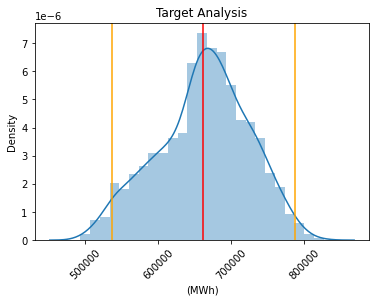
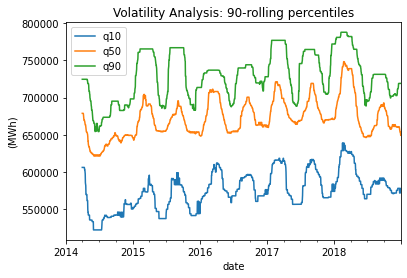
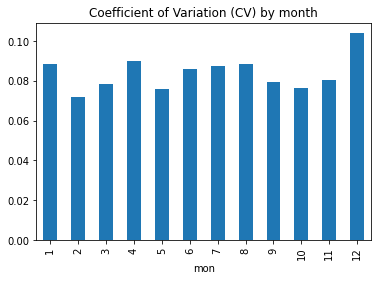
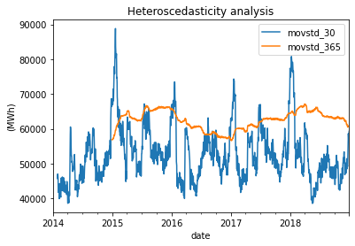
Moving averages, quarterly and weekday box plots, and a regression on monthly totals show two clear seasonal patterns (quarters and weekdays, with lower demand at weekends) and a positive, slightly damped trend consistent with economic recovery over the period.
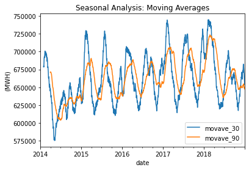
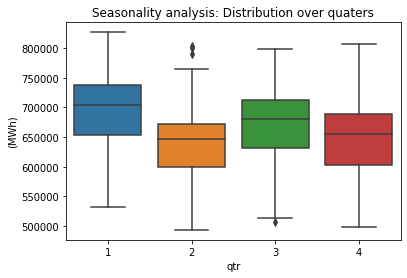
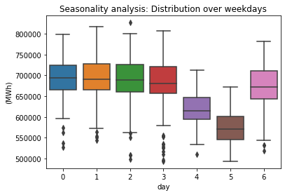
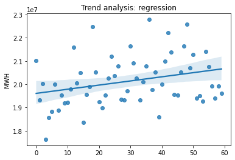
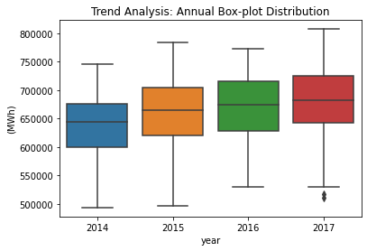
4.2 Feature engineering
The target is standardised demand. Features are built automatically so they can absorb seasonality, trend, and changing volatility:
lagged values (feat_ar1 … feat_ar30), rolling means (7, 14, 30 days), and 30 forward targets (target_t1 … target_t30)
so one model can forecast every horizon at once.
features, targets = [], []
for lag in range(1, 31):
data[f"feat_ar{lag}"] = data["target"].shift(lag)
features.append(f"feat_ar{lag}")
for w in (7, 14, 30):
data[f"feat_movave{w}"] = data["target"].shift(1).rolling(w).mean()
features.append(f"feat_movave{w}")
for t in range(1, 31):
data[f"target_t{t}"] = data["target"].shift(-t)
targets.append(f"target_t{t}")
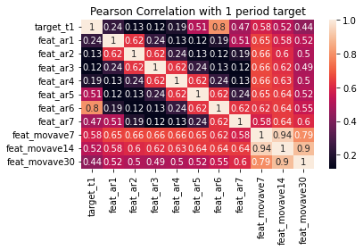
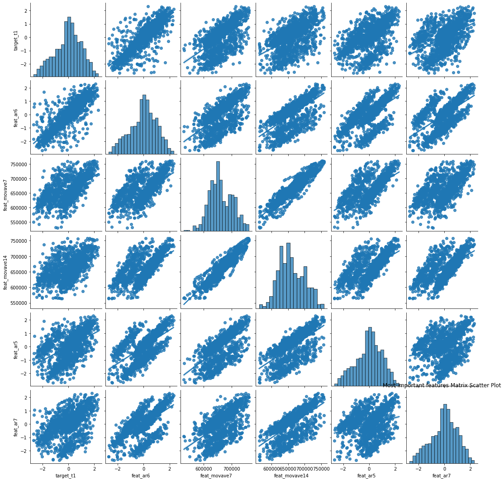
4.3 Random Forest
Data from 2014–2016 trains the model and 2016–2017 is held out. A linear regression sets the baseline (train RMSE 0.319, test RMSE 0.315 on the standardised target). A Random Forest is then tuned with a time-series split of three folds, each training on at most two years.
flowchart LR
D[Daily demand
2014 to 2018]:::input --> F[Features
30 lags · 3 rolling means]:::process
F --> CV[Time-series split
3 folds, 2-year window]:::process
CV --> RF[Random Forest
500 trees, depth 10]:::agent
RF --> H[30 targets
1 to 30 days ahead]:::output
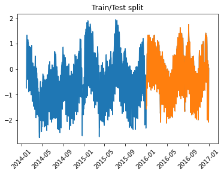
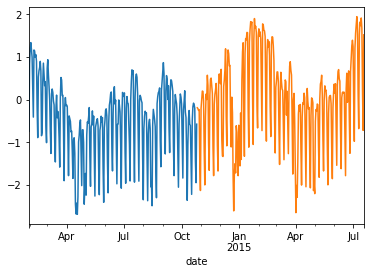
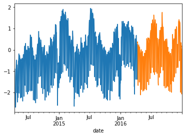
from sklearn.ensemble import RandomForestRegressor
from sklearn.model_selection import TimeSeriesSplit, ParameterGrid
splits = TimeSeriesSplit(n_splits=3, max_train_size=365 * 2)
grid = ParameterGrid({"n_estimators": [100, 500], "max_depth": [5, 10], "max_features": [20, 59], "random_state": [123]})
for params in grid:
for train_idx, val_idx in splits.split(X_train):
model = RandomForestRegressor().set_params(**params).fit(X_train.iloc[train_idx], y_train.iloc[train_idx])
# keep the parameters with the lowest validation RMSE
Selected model
- 500 trees, maximum depth 10, all 59 features considered at each split.
- Best fold: train RMSE 0.017, validation RMSE 0.458 (standardised units).
- Feature importance is dominated by recent lags (AR5, AR13, AR27) and the 7-day moving average.
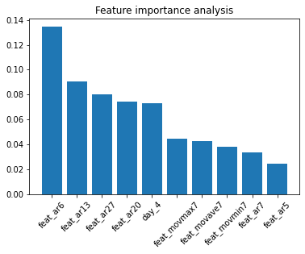
4.4 LightGBM
The same feature table was also fitted with LightGBM, a gradient-boosted tree model that trains far faster than a forest of 500 trees on wide lag tables and handles the calendar and weather columns natively. It was trained with the same time-series split and early stopping on the validation fold.
# lightgbm_forecast.py: one model per horizon, early-stopped on the time-series validation fold.
import lightgbm as lgb
params = {"objective": "regression", "learning_rate": 0.03, "num_leaves": 31,
"feature_fraction": 0.8, "bagging_fraction": 0.8, "bagging_freq": 1, "verbose": -1}
models = {}
for t in range(1, 31):
train = lgb.Dataset(X_train, y_train[f"target_t{t}"])
valid = lgb.Dataset(X_valid, y_valid[f"target_t{t}"])
models[t] = lgb.train(params, train, num_boost_round=3000, valid_sets=[valid],
callbacks=[lgb.early_stopping(100), lgb.log_evaluation(0)])
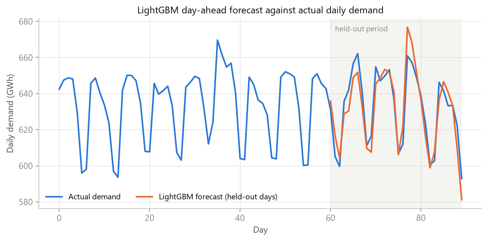
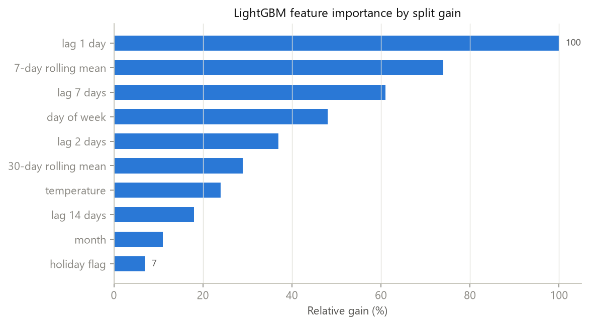
5. Anomaly detection
Anomaly detection finds unusual behaviour in a dataset. For time series it can be approached with statistical methods (clustering, wavelet transforms, autoregressive models) or with machine learning, in supervised or unsupervised form. This work applies an unsupervised LSTM autoencoder to the merged inverter and weather data: the model learns to reconstruct normal hours, and an hour it cannot reconstruct is an anomaly.
flowchart TB
D[(MongoDB
inverter hours + weather)]:::store --> W[Windows of all metrics
1, 7 or 30 time steps]:::process
W --> ENC[Encoder LSTM
16-unit latent state]:::agent
ENC --> DEC[Decoder LSTM
+ TimeDistributed Dense]:::agent
DEC --> ERR[Reconstruction error
per metric and mean]:::process
ERR --> TH{Above static or
dynamic threshold?}:::decision
TH -- yes --> AL[Global and local
anomalies]:::output
TH -- no --> OK[Normal hour]:::note
5.1 Exploratory analysis
A pandas-profiling report gives the overview, warnings, missing-value map, and three correlation matrices in one pass.
- Pearson's r measures linear correlation between two variables.
- Spearman's ρ measures monotonic correlation and so catches non-linear monotonic relationships.
- Phik (φk) works across categorical, ordinal, and interval variables, captures non-linear dependency, and reduces to Pearson for bivariate normal input.
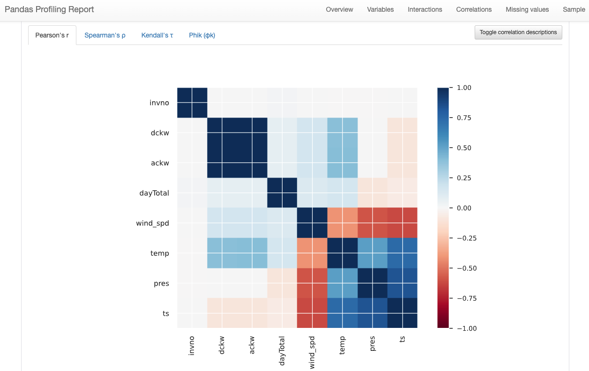
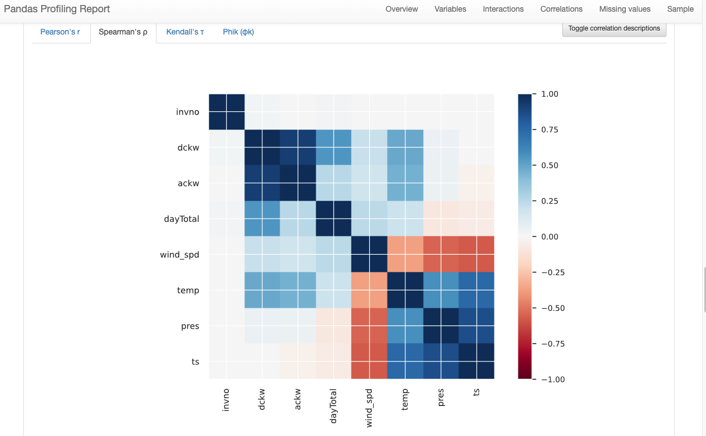
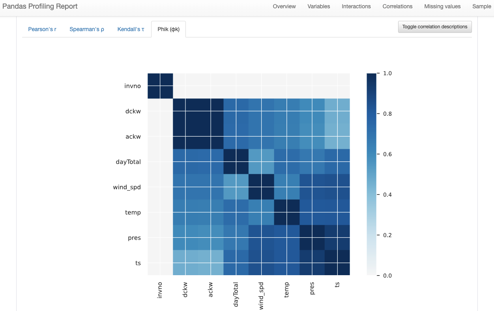
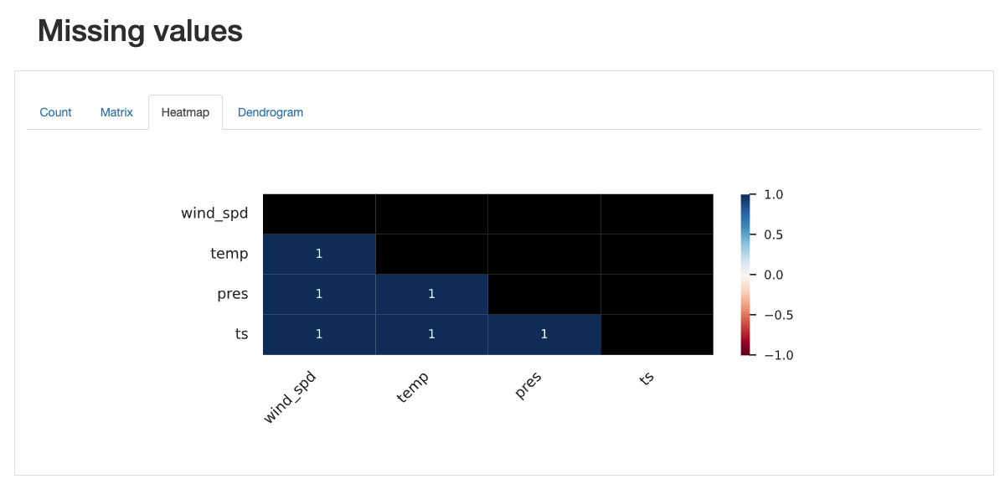
5.2 Feature selection
invno and ts are dropped as identifiers, and ackw is dropped because AC power follows directly from DC power at the inverter.
Spearman's correlation shows dckw, dayTotal, wind_spd, and temp moving together; pres is kept for testing.
| Item | Value |
|---|---|
| Features | datetimeAt, dckw, ackw, dayTotal, wind_spd, temp, pres |
| Train shape | (819, 6) |
| Test shape | (351, 6) |
| Time steps | 1, 7, or 30 |
| Points to predict | 1, 2, or 3 steps ahead |
def Data():
dataset = pd.read_csv("./combined.csv").fillna(0)
dataset = dataset.drop(columns=["invno", "ts"])
return dataset.set_index("datetimeAt")
5.3 Model
An LSTM is a recurrent network with forget, input, and output gates, which makes it a natural fit for sequential data. Forecasting one metric with an
LSTM alone cannot give a global view across all metrics, so an autoencoder is added: the encoder compresses a window of all features into a 16-unit state,
RepeatVector expands it back to the window length, and a decoder LSTM with a time-distributed dense layer reconstructs every feature.
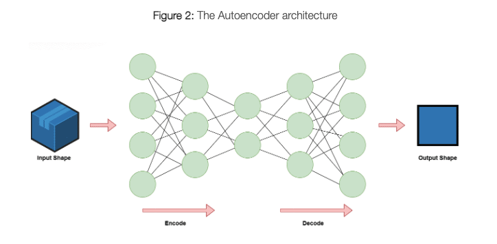
def build_model(self):
self.model = Sequential()
self.model.add(LSTM(units=16, input_shape=(self.X_train.shape[1], self.X_train.shape[2])))
self.model.add(RepeatVector(n=self.X_train.shape[1]))
self.model.add(LSTM(units=16, return_sequences=True))
self.model.add(TimeDistributed(Dense(self.X_train.shape[2])))
self.model.compile(optimizer=tf.keras.optimizers.Adam(learning_rate=0.005), loss="mse")
def fit_model(self, epochs, batch_size):
self.history = self.model.fit(self.X_train, self.Y_train, epochs=epochs, batch_size=batch_size,
validation_split=0.1, shuffle=False)
All chosen features are used as metrics, the model predicts three data points ahead, and shuffle=False keeps the order of time steps.
Mean squared error gives the smoothest training.
5.4 Training and reconstruction error
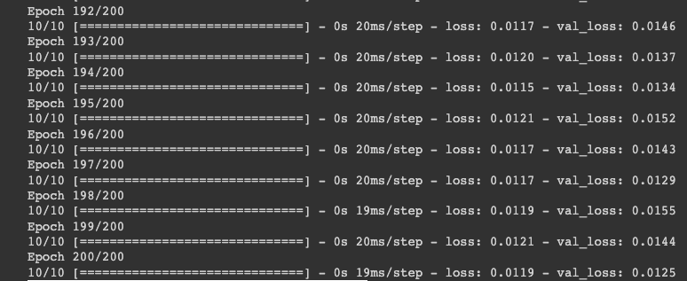
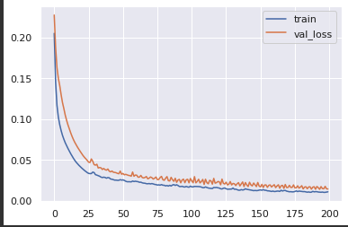
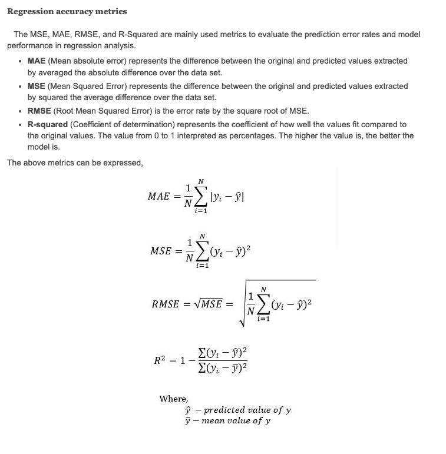
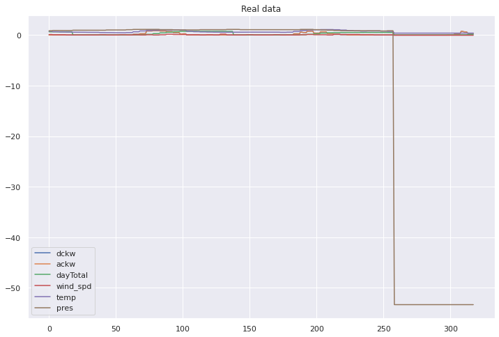
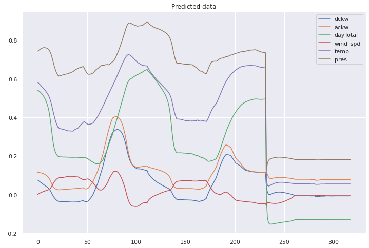
5.5 Thresholds
Anything above a threshold is an anomaly. Two kinds are used together, because a single fixed threshold either misses slow drifts or floods the operator with alerts.
Static threshold. The mean of the training MAE plus three standard deviations.
pred_error_threshold = np.mean(train_pred_errors) + 3 * np.std(train_pred_errors)
Dynamic threshold. A rolling window with its own standard-deviation coefficient, chosen empirically on the training data only (window 40, coefficient 5 for ARIMA, 6 for CNN and LSTM).
train_pred_errors_windowed = pd.Series(train_pred_errors).rolling(window=window, min_periods=1)
train_dynamic_threshold = train_pred_errors_windowed.mean() + std_coef * train_pred_errors_windowed.std()
valid_pred_errors_windowed = pd.Series(valid_pred_errors).rolling(window=window, min_periods=1)
valid_dynamic_threshold = valid_pred_errors_windowed.mean() + std_coef * valid_pred_errors_windowed.std()
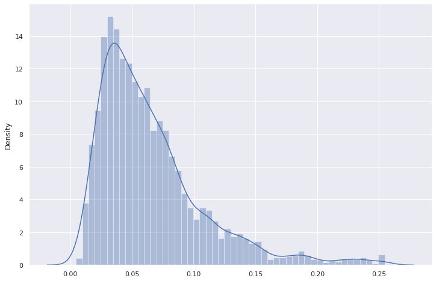
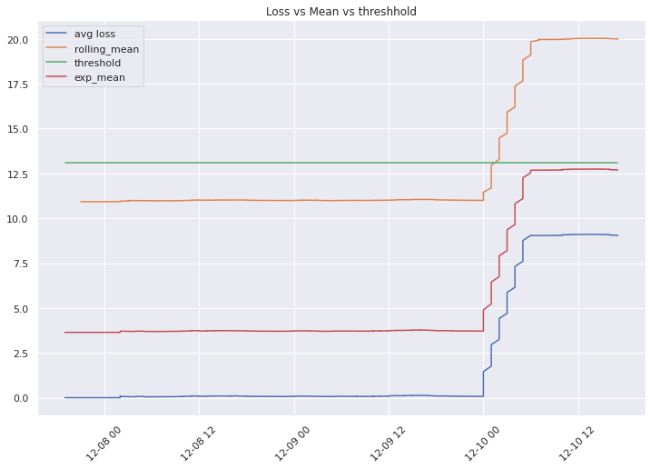
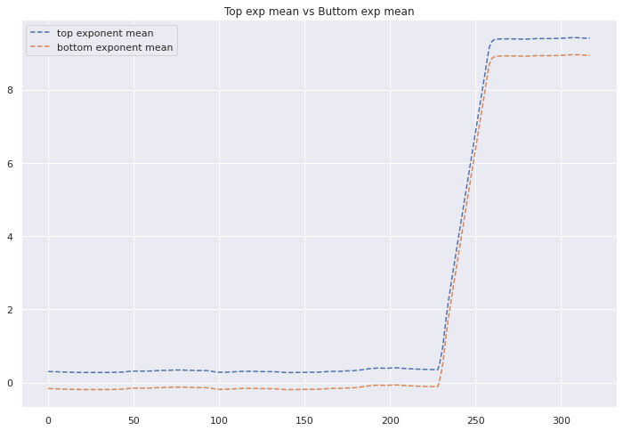
A moving average smooths short-term fluctuation to show longer-term structure; the window length trades smoothing against responsiveness.
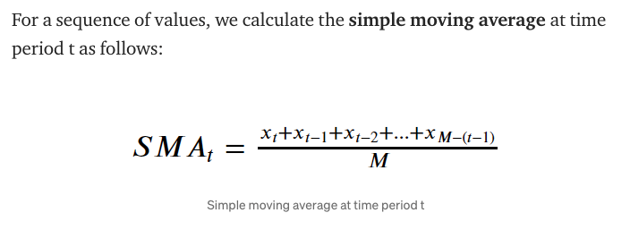
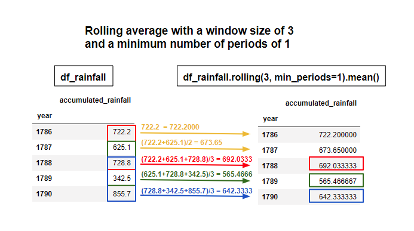
5.6 Global and local anomalies
A global anomaly fires when the mean loss over all metrics crosses the lower (dynamic) threshold. A local anomaly fires when a single metric's loss crosses its own, higher threshold. Reporting them separately tells an operator whether one metric or the whole plant is misbehaving.
loss rolling_mean exp_mean threshold global_anomaly
datetimeAt
2021-12-07 19:00:00 0.255701 11.056723 3.800142 12.986072 False
2021-12-07 20:00:00 0.254932 11.091915 3.799565 12.986072 False
2021-12-07 20:00:00 0.254157 11.066023 3.798895 12.986072 False
is_global_anomaly_exp_mean = abs(mean_exp - loss_mean_vec) > threshold_mean_exp + num_of_std * std
for index, metric in enumerate(self.data.columns):
threshold = self.train_loss_mean[index] + num_of_std * self.train_loss_std[index]
is_anomaly = self.test_loss[:, index] > threshold
# global anomalies are collected from the exponential-mean test,
# local anomalies from the per-metric threshold
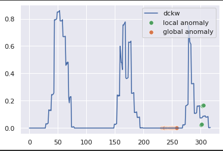
dckw) with local (green) and global (orange) anomalies.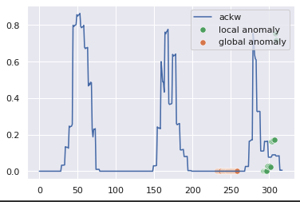
ackw).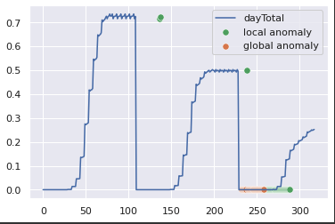
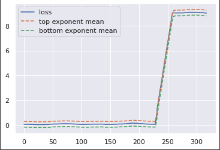
6. Results
6.1 Forecast accuracy
Mean absolute percentage error (MAPE) is used because it is easy to communicate. One-day-ahead Random Forest forecasts on the test year track the actual series closely, and the residuals are centred on zero with a few large negative outliers on exceptionally cold days.
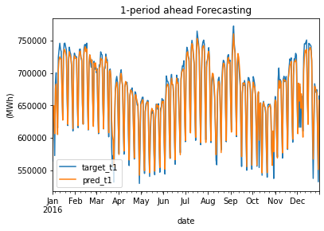
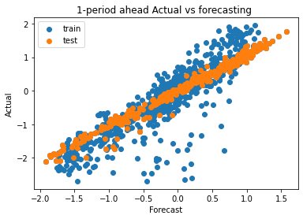
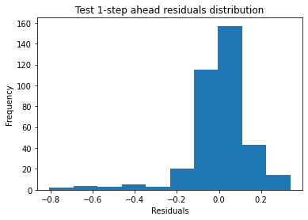
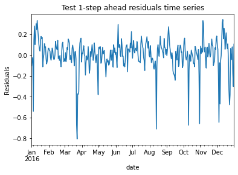
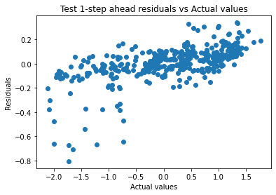
A new Random Forest with the tuned parameters is fitted on the two most recent years and used to forecast 1, 7, 14, and 30 days ahead. Error grows with horizon but stays modest, and the scatter of actual against forecast widens mainly at extreme values.
Random Forest test MAPE by horizon
- 1 day ahead: 1.13 %
- 7 days ahead: 1.39 %
- 14 days ahead: 1.57 %
- 30 days ahead: 1.73 %
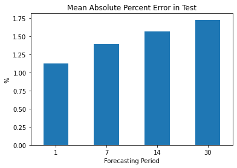
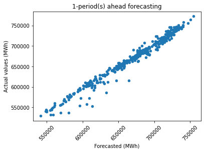
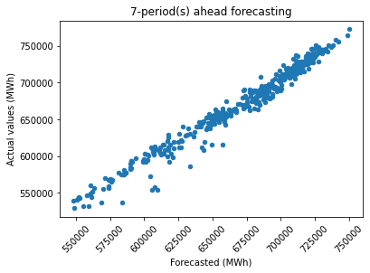
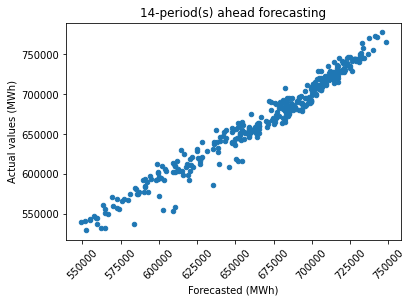
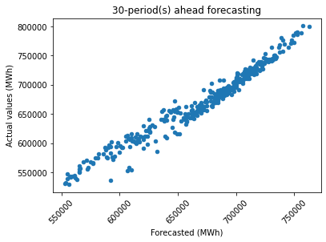
6.2 Detected anomalies
Indices of anomaly samples: (array([147, 192]),)
##################### Details of anomaly ###################
[{'Datetime': Timestamp('2021-12-02 16:00:00'), 'dckw': 4.213291015625, 'invno': 1},
{'Datetime': Timestamp('2021-12-02 06:00:00'), 'dckw': 0.0, 'invno': 4}]
Findings
- The autoencoder reconstructs normal inverter behaviour closely; the reconstruction error separates two clear events on 2 December 2021 (inverter 1 at 16:00, inverter 4 at 06:00).
- The static mean-plus-3σ threshold alone over-flags on this data; the dynamic rolling threshold is what makes global anomalies usable.
- Reporting local and global anomalies separately tells an operator whether one metric or the whole plant is misbehaving.
7. Deployment
The pipeline ran on the daily Airflow schedule described in section 2: new hours in, features rebuilt, both model families scored, results published. The anomaly model was also exposed as a small Flask service so that a CSV of recent hours could be scored on demand: it loads the trained autoencoder, scales and reshapes the rows for the LSTM, scores each row by mean absolute reconstruction error against the threshold, and returns the anomalies as JSON.
flowchart LR
AF[Airflow
daily run]:::tool --> M[(MongoDB
features)]:::store
M --> SC[Scoring job
forecast + anomaly]:::agent
SC --> R[(Results
forecasts · alerts)]:::store
R --> DB2[Dashboard]:::output
OP[Operator
CSV of recent hours]:::input --> API[Flask API
anomaly_model.h5]:::agent
API --> J[Anomalies
as JSON]:::output
app = flask.Flask(__name__)
model = load_model("./model/anomaly_model.h5")
@app.route("/", methods=["POST"])
def submit():
df = read_uploaded_csv(flask.request.files["data_file"])
X = scaler.transform(df).reshape(-1, 1, df.shape[1])
preds = model.predict(X).reshape(len(df), -1)
loss = np.mean(np.abs(X.reshape(len(df), -1) - preds), axis=1)
hits = [{"Anomaly": True, "Value": float(l), "datetime": str(i)} for i, l in zip(df.index, loss) if l > THRESHOLD]
return flask.jsonify({"Analysis": hits or [{"Anomaly": "No Anomalies Detected"}]})
Planned next steps at the time were reading directly from the database inside the API, scoring the live stream rather than uploads, and hardening the service.
8. Summary
The project follows energy from where it is generated to where it is used, and turns the data from that chain into two things an operator can act on: a demand forecast up to 30 days ahead, and anomaly alerts for the inverters. The data came off an AWS server into MongoDB on an Airflow schedule. A Random Forest reached a test MAPE of 1.13 % one day ahead and 1.73 % thirty days ahead, with LightGBM trained on the same features; a multivariate LSTM autoencoder with static and dynamic thresholds separated two clear inverter events in the test week. The anomaly model is served through a Flask API.
9. Repository
The forecasting and anomaly-detection notebooks are public in the Data-Science repository:
- Project-3 · Energy data analysis: Random Forest demand forecasting notebook and the LSTM anomaly-detection copy.
- Project-4 · LSTM autoencoder anomaly detection:
explore_data.ipynb,lstm_anomaly.py(theAutoEncoderclass), andapp.py(Flask service).